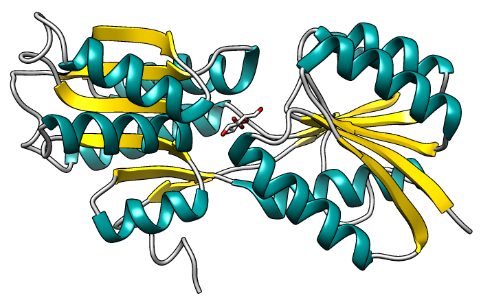
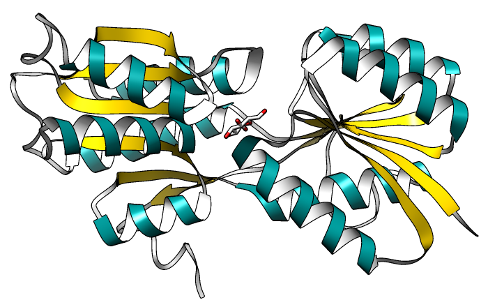
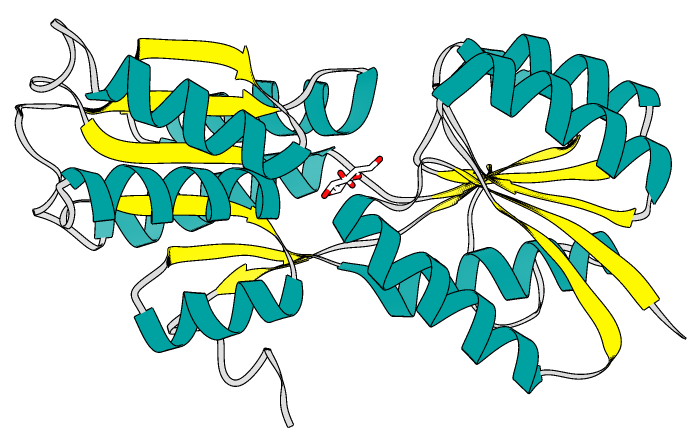
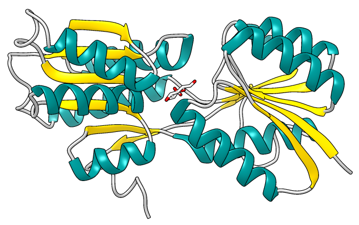

| smooth ribbons except edged strands,
default lighting: |
|  |
| flat ribbons, white insides,
default lighting: |
|  |
| flat ribbons, ambient-only lighting: |
|  |
| smooth ribbons, default lighting except
decreased contrast and reflectivity: |
|  |
This tutorial shows just a few of the many possible combinations of ribbon styles and other display settings. See also: ribbons, tips on preparing images
Start Chimera and show the Command Line (for example, with Favorites... Command Line). Fetch Protein Data Bank entry 2gbp:
Command: open 2gbpMove and scale the structure as you wish throughout the tutorial. It contains an E. coli chemoreceptor protein bound to glucose.
Switch to white background and turn on black outlines:
Command: set bgColor whiteShow only the ligand atoms and adjust the coloring:
Command: set silhouette
Command: ~dispResize the window as desired, either by dragging its lower right corner with the mouse or by using the command windowsize. The window dimensions define the aspect ratio (width:height) of output images, but image resolution (pixel dimensions) can be specified independently when an image is saved.
Command: disp ligand
Command: color gray coil
Command: color gold strand
Command: color dark cyan helix
Command: color byelement
Command: color white ligand & C
The default ribbon style is smooth (rounded), but there are also edged, flat and potentially custom styles that can be used for parts or all of peptide chains:
Command: ribrep edged
Command: ribrep smooth
Command: ribrep edged strand
Command: ribrep flat
The insides of ribbons in protein helices can be colored differently:
Command: ribinsidecolor whiteThe result is similar to the “flat ribbon” publication preset.
To remove the separate inside coloring:
Command: ~ribinside
The default lighting includes directional lights and shininess. To use ambient-only lighting instead:
Command: light mode ambientRestore the smooth style and default lighting:
Command: ribrep smoothThe darkest areas can be lightened and the shiny highlights dimmed by decreasing the contrast (default 0.83) and reflectivity (default 1.0), respectively.
Command: light restore "Chimera default"
Command: light contrast 0.3
Command: light reflectivity 0.5
{kind=link}
{kind=link}
{kind=link}
{kind=link}